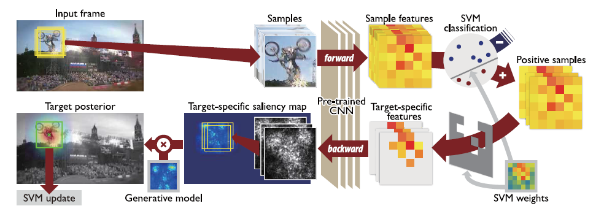
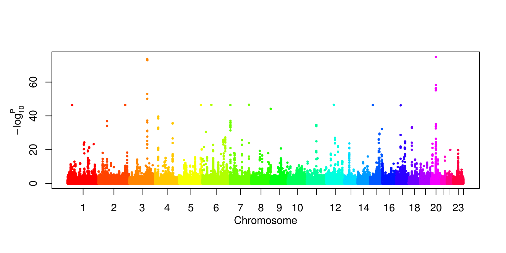

What is machine learning?
Machine Learning is concerned with computer programs that automatically improve their performance through experience (e.g., that learn to spot high-risk medical patients, recognize speech, classify text documents, detect credit card fraud, or drive autonomous robots). This course provides an in-depth understanding of machine learning and statistical pattern recognition techniques and their applications in biomedical informatics, computer vision, and other domains.
-
Learning Foundations
Understanding the foundation, major techniques, applications, and challenges of machine learning.
-
Applied Machine Learning
The ability to implement and apply basic machine learning algorithms for solving real-world problems.
-
Advanced Machine Learning
(Graduate-level) The ability to develop new machine learning algorithms tailored to specific applications.
Topics Covered
Background
Machine learning is an interdisciplinary direction that builds the intersection among many mathematical topics and computer science foundations. To make the course self-contained relevant math topics will be briefly reviewed in the lectures, but it strongly recommended that students took these subjects formally before enrolling. Currently Python is used in CSE 498 because of its popularity in industries. Matlab is used in CSE 847 so students are focused on learning algorithms. Note that Matlab is free for current MSU students. In addition, the graduate level course requires the use of Latex and Github. The students are expected to be familiar with the following topics:
Even though machine learning models nowadays become increasingly complicated, simple models such as linear ones are still the core components of machine learning research. Not only do they offer theoretical foundations of and insights into the more complicated models, their performance remains powerful in practical applications. We will cover the following:
-
Linear Regression
-
Linear Classification
-
Support Vector Machines
-
Tree Methods
-
Unsupervised Learning
Their theoretical behavior of these methods is thoroughly studied in the past. They are easy to implement and deploy, and they are among the first to try when solving real world problems.
In addition, the graduate course CSE 847 includes overviews of advanced machine learning topics from cutting edge academic and industry machine learning research. The topics include but not limited to the following:
-
Advanced Linear Algebra (e.g., SVD)
-
Sparse Learning, Matrix Completion
-
Ensemble Methods
-
Multi-task and Transfer Learning
-
Neural Networks and Deep Learning
Since these are active research topics, graduate students can identify areas that align with their research interests and existing projects.
In this project, the team proposed and evaluated different approaches to automatically generate Chinese poems (Ci). Ci is one of the most important genres of Chinese classical poetry. As a precious cultural heritage, not many of them have been passed down onto the current generation. Therefore, the study of automatic generation of Ci is meaningful, not only because it supplements entertainment and education resources to modern society, but also because it demonstrates the feasibility of applying artificial intelligence in Art generation.
Learn More
In this project the team studied the object tracking work of Hong, et al. 2015, and reproduced their work through the creation of a viable demo. The study investigates how to solve challenges of occlusion, pose variations, illumination changes, fast motion, and background clutter. Learn More
In this project the team seeks to predict complex human phenotype from high dimensional whole genome profiles. To solve the curse of dimensionality, they explored a novel two-tier modeling by first choosing representative features from chromosome blocks, then build a higher tier predictive model. They showed improvements of predictive accuracy over existing GWAS or kernel based models. Learn More
Automated Valuation Models (AVM) have become increasingly popular as the real estate market has embraced the World Wide Web as a source of accurate, up to the minute data. Banks have also shown great interest in using AVMs to help mitigate fraud by human appraisal. The team explored various machine learning techniques to implement an AVM and predicted the true value of a house based on features commonly found on real estate listings. Learn More
Check out the quotes from students' feedback:
Very comprehensive, my favorite CSE elective.
-- Anonymous student from CSE 491
Loved the implementation of models after learning the theory.
-- Anonymous student from CSE 491
The course covered much depth and width of literature and many frontier advances. This course will greatly assist my career.
-- Anonymous student from CSE 847
Very interesting course, loved the applications.
-- Anonymous student from CSE 847